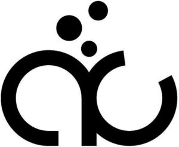

Trade Mark Journal No.2025/035 29 August 2025
WO0000001869844 (5,41,42,44)
Office of origin: European Union Intellectual Property Office (EUIPO)
Date of International Registration:10 July 2025
Date of designation in the UK:
10 July 2025

International priority date claimed: 21 January 2025
(European Union Intellectual Property Office (EUIPO))
(019133847)
- Class 5
- Pharmaceuticals; diagnostic preparations and materials, for medical and veterinary purposes; antibiotics; antifungal medication; anti-viral agents; anti-cancer drugs; immunomodulators; cellular function activating agents for medical purposes; dietetic preparations adapted for medical use; blood substitutes; blood protein fractions; enzyme preparations for veterinary purposes; enzymes for veterinary purposes; enzyme preparations for medical purposes; greases for medical or veterinary purposes; vaccines; stem cells for veterinary purposes; stem cells for medical purposes; blood plasma.
- Class 41
- Training; arranging and conducting of seminars; teaching; courses (training -) relating to science; publication of scientific information journals; electronic publication.
- Class 42
- Development of pharmaceutical preparations and medicines; pharmaceutical research services; pharmaceutical product evaluation; testing of pharmaceuticals; laboratory research in the field of pharmaceuticals; information technology services for the pharmaceutical and healthcare industries; providing medical research information in the field of pharmaceuticals; conducting early evaluations in the field of new pharmaceuticals; conducting clinical trials for pharmaceutical products; biological research, clinical research and medical research; medical research laboratory services; scientific investigations for medical purposes.
- Class 44
- Medical services; pharmaceutical services; medical screening; medical diagnostic services; consultancy and information services relating to biopharmaceutical products; consultancy and information services relating to medical products.
AiCuris Anti-infective Cures AG
Representative: BOEHMERT & BOEHMERT Anwaltspartnerschaft mbB - Patentanwälte Rechtsanwälte, Kurfürstendamm 185, 10707 Berlin, GERMANY